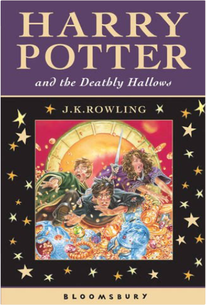
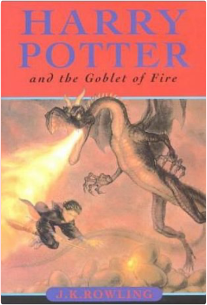

Marley's face. It was not in impenetrable shadow as the other objects in the yard were, but had a dismal light about it, like a bad lobster in a dark cellar. Ebenezer Scrooge is unimpressed by Christmas. He has no time for festivities or goodwill toward his fellow men and is only interested in money. Then, on the night of Christmas Eve, his life is changed by a series of ghostly visitations that show him some bitter truths about his choices. Dickens' most influential book is a funny, clever, and hugely enjoyable story. The world is in flames . . .You look behind - there's nothing but smoke.Ahead of you the future has just burst into flames.Your life is on fire. The world's an inferno.You're burning . . . with passion and fear, with love and rage.You're burning for revenge.Burning For Revenge is the fifth volume in the award-winning Tomorrow series.  What's the biggest danger you can think of? THIS IS BIGGER. |  Hidden away in the Record Department of the sprawling Ministry of Truth, Winston Smith skilfully rewrites the past to suit the needs of the Party. Yet he inwardly rebels against the totalitarian world he lives in, which demands absolute obedience and controls him through the all-seeing telescreens and the watchful eye of Big Brother, symbolic head of the Party. In his longing for truth and liberty, Smith begins a secret love affair with a fellow-worker Julia, but soon discovers the true price of freedom is betrayal.  Harry Potter and the Deathly HallowsRowling, J. K. Rowling Harry Potter is preparing to leave the Dursleys and Privet Drive for the last time. But the future that awaits him is full of danger, not only for him, but for anyone close to him - and Harry has already lost so much. Only by destroying Voldemort's remaining Horcruxes can Harry free himself and overcome the Dark Lord's forces of evil. In this dramatic conclusion to "The Harry Potter Series", Harry must leave his most loyal friends behind, and in a final perilous journey find the strength and the will to face his terrifying destiny: a deadly confrontation that is his alone to fight. In this thrilling climax to the phenomenally bestselling series, J.K. Rowling reveals all to her eagerly waiting readers.  Harry Potter and the Goblet of Fire No 4J. K. Rowling From the back of the dust jacket: "The summer holidays are dragging on and Harry Potter can't wait for the start of the school year. It is his fourth year at Hogwarts School of Witchcraft and Wizardry, and there are spells to be learnt, potions to be brewed and Divination lessons (sigh) to be attended. Harry is expecting these: however, other quite unexpected events are already on the march ..."  Harry Potter is an ordinary boy who lives in a cupboard under the stairs at his Aunt Petunia and Uncle Vernon's house, which he thinks is normal for someone like him who's parents have been killed in a 'car crash'. He is bullied by them and his fat, spoilt cousin Dudley, and lives a very unremarkable life with only the odd hiccup (like his hair growing back overnight!) to cause him much to think about. That is until an owl turns up with a letter addressed to Harry and all hell breaks loose! He is literally rescued by a world where nothing is as it seems and magic lessons are the order of the day. Read and find out how Harry discovers his true heritage at Hogwarts School of Wizardry and Witchcraft, the reason behind his parents mysterious death, who is out to kill him, and how he uncovers the most amazing secret of all time, the fabled Philosopher's Stone! All this and muggles too. Now, what are they? |

Doddridge Library
Collection Total:
417 Items
417 Items
Last Updated:
Apr 21, 2020
Apr 21, 2020


 Made with Delicious Library
Made with Delicious Library